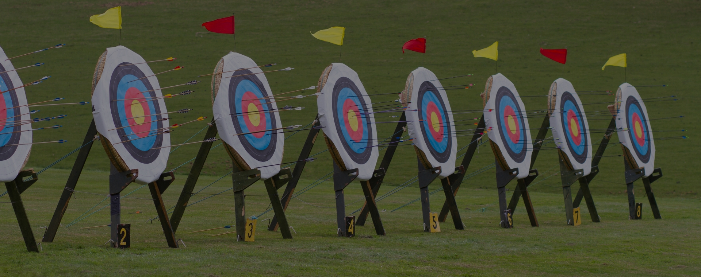

<div class="container mt-3">
    <div class="row">
        <div class="card h-100">
            <div class="">
             
        </div>
            <div class="card-body">
              <h5 class="card-title">Popular Archery Games and Competitions </h5>
              <h6 class="card-text">Target Archery </h6>
              <p>Description: Target archery is the most recognized form of archery, where participants aim at stationary circular targets set at specific distances.              </p>
            
              <h6>Competitions:</h6>
              <ol>
                <li>Olympic Games: Target archery is a key event, with archers shooting at a target 70 meters away.</li>
                <li>World Archery Championships: Organized by the World Archery Federation, this competition attracts top archers from around the globe.</li>
                <li>National Championships: Many countries host their own national target archery competitions, providing a platform for local talent.</li>
              </ol>
            </div>
            <h6>Field Archery</h6>
            <p>Description: Field archery involves shooting at targets of varying sizes and distances, often set in rugged outdoor terrain. It mimics a hunting experience.</p>
            <ol>
                <li>World Field Archery Championships: This competition features challenging courses in natural environments, testing an archer’s adaptability.</li>
                <li>National and Local Tournaments: Many regions host their own field archery competitions, often in scenic locations.</li>
            </ol>
            <p>Excitement Factor: The challenge of navigating through different terrains and adjusting for distance and elevation makes field archery a dynamic and engaging game.</p>
    
            <h6>Indoor Archery</h6>
            <p>Description: Indoor archery is typically practiced in a controlled environment, with targets set at a fixed distance, usually 18 meters.</p>
            <h6>Competitions:</h6>
            <ol>
                <li>Traditional Bowhunters World Championship: Celebrates traditional archery skills and equipment.</li>
                <li>Rendezvous Events: These gatherings, often held by traditional archery societies, include a variety of traditional archery games and challenges.</li>
            </ol>
            <p>Excitement Factor: The dynamic nature of the game, with players dodging and shooting in real-time, creates an adrenaline-pumping experience.</p>
       

            <h6>Flight Archery</h6>
            <p>Description: Flight archery focuses on shooting arrows for maximum distance rather than accuracy. Archers compete to see whose arrow flies the farthest.</p>
            <h6>Competitions:</h6>
            <ol>
                <li>World Flight Archery Championships: Held in open spaces like salt flats or dry lake beds, where archers can achieve impressive distances.</li>
                <li>National Flight Archery Competitions: Various countries host their own events, showcasing the skill of distance shooting.</li>
            </ol>
            <p>Excitement Factor: The emphasis on power and aerodynamics, along with the spectacle of seeing arrows soar great distances, makes flight archery a unique and exhilarating discipline.</p>
       


            <h6>Clout Archery</h6>
            <p>Description: In clout archery, archers aim at a target laid flat on the ground from a long distance, usually 180 yards for men and 140 yards for women.</p>
            <h6>Competitions:</h6>
            <ol>
                <li>National Clout Championships: Many countries hold annual championships for clout archery.</li>
                <li>Local Clubs and Events: Various clubs organize clout shoots, providing opportunities for both practice and competition.</li>
            </ol>
            <p>Excitement Factor: The challenge of judging long distances and the satisfaction of landing arrows close to the center of the target provide a distinct appeal.</p>
        
        
        
        </div>
</div>